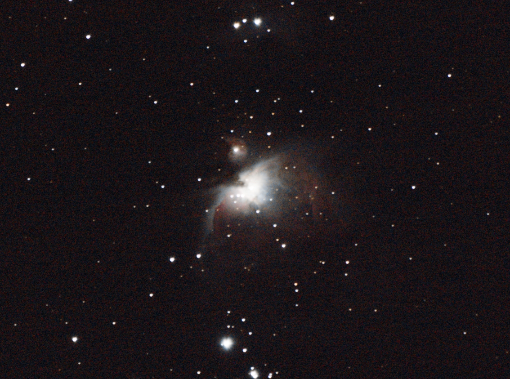
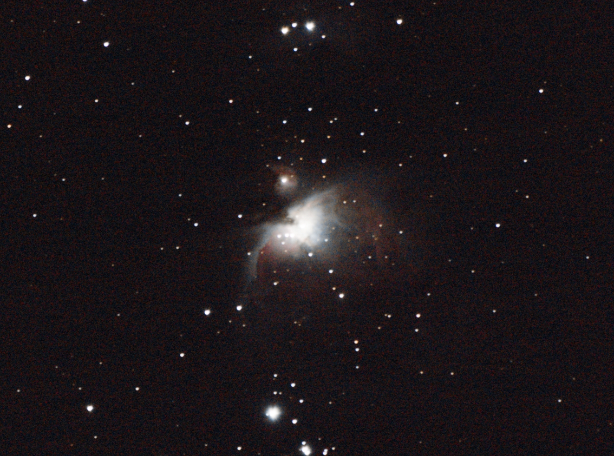

V astrofotografiji se fotoaparati usmerjajo v nočno nebo in slikamo nebesna telesa (planeti, lune, kometi), ostanki supernov (plazma, prah in ostali delci), meglice.
Primarno se stil fotografije ločuje na znanstveni in amaterski del. Znanstveniki s pomočjo velikih teleskopov in observatorijev merijo, slikajo in delajo raziskave o oddaljenih galaksijah, zvezdah in ostalih pojavih. Za nas navadne smrtnike, ki nimamo na razpolago takšne opreme pa pride v poštev amaterska astrofotografija, katera je opisana tu.
Ker je nočno nebo zelo temno in ker so elementi katere želimo slikati zelo daleč stran ter slabo osvetljeni, bomo z našim fotoaparatom probali ujeti čim več svetlobe. Uporabili bomo torej objektiv z čim nižjo f vrednostjo in čim daljšo ekspozicijo. Vendar tu pridemo manjšega problema. Ker sta fotoaparat in stativ statična zemlja pa se obrača okoli svoje osi, se bodo, po določenem času, zvezde začele brisati in za seboj puščati sledi (kar lahko doseže zelo zanimiv efekt, če je to naš cilj). Rešitev je dokaj preprosta, fotoaparat moramo pač obračati z isto hitrostjo kot se zemlja obrača. Pri tem uporabimo napravo, ki se ji reče »startracker« (motorizirana glava, ki se ob pravilni kalibraciji obrača s hitrostjo zemlje ). Sedaj lahko slikamo ekspozicije dolge tudi po več minut. A če želimo iz medlih subjektov zajeti čim več podrobnosti bomo čas ekspozicije morali podaljšati do več deset ur. Tu lahko pride več problemov. Veter ali drugi dejavniki lahko zatresejo stativ kar uniči sliko, upoštevati je treba nepravilnosti na samem startrackerju, pri katerem se napake pri krajših ekjspozicijah zanemarijo, a pri zelo dolgih zelo poznajo. Torej kaj storiti? V astrofotografiji se zajame več sto slik z enako ekspozicijo in se jih nato zloži skupaj z različnimi programi. V procesu zlaganja se povečuje dinamični razpon, ki bolj medle podrobnosti združuje in jih počasi odmika od dna dinamičnega razpona in postajajo vedno bolj vidne. Zlaganje slik pa ima še eno pomembno vlogo. Ker slikamo ponoči bo v sliki prisotno kar nekaj šuma. Ker pa je šum naključna stvar, ki se pojavlja v fotografiji, programi za zlaganje povprečijo vrednosti prisotnega šuma, ki se v končni zloženi sliki bistveno zniža.
Tudi brez sledenja lahko naredimo lepe slike, vendar bo potrebno vložiti veliko več časa in truda. Ker ne sledimo zvezdam se bo ekspozicija drastično znižala (par sekund). Zajeti bomo torej morali po par tisoč slik, če želimo dobiti čim več svetlobe/informacij. Pri načinu brez sledenja je prisotno tudi veliko več šuma.
Primeri slik pri katerem smo sledili zvezdam (levo), in ista tarča ampak brez sledenja (desno).


 

Za astrofotografijo lahko uporabljamo normalne brezrcalne ali zrcalnorefleksne fotoaprate, lahko pa tudi aparate, ki so narejeni izrecno za astrofotografiranje. Uporabljajo se objektivi vse od širokokotnih (10-20mm) pa do velikih telefoto objektivov (do 600mm). Pri posebnih astro aparatih pa se ponavadi uporabljajo večji teleskopi, katere lahko z adapterji priklopimo tudi na DSLR fotoaparat. Kot že prej omenjeni, se uporabljajo tudi sledilci zvezd in pa različni filtri. Večina astro fotoaparatov slika črno-belo. Zato se najbolj pogosto uporabljajo filtri za vse tri najbolj znane barvne kanale (R, G, B).